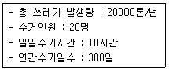
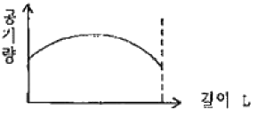
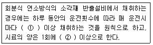
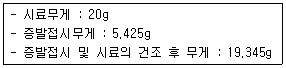
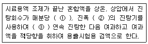
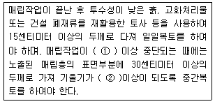

폐기물처리기사 (2010-03-07 기출문제)
1과목: 폐기물 개론
1. 어떤 쓰레기의 가연분의 조선비가 60%이며 수분의 함유율이 30%라면, 이 쓰레기의 저위발열량(kcal/kg)은? (단, 쓰레기 3성분의 조성비 기준의 추정식 적용)
- 약 2250
- 약 2340
- 약 2520
- 약 2680
(정답률: 알수없음)

2. 지정폐기물인 폐석면의 입도를 분석한 결과에 의하면 d10=3mm, d30=5mm, d50=9mm 그리고 d90=10mm이었다. 이 때 곡률계수는?
- 0.63
- 0.73
- 0.83
- 0.93
(정답률: 알수없음)
3. 도시폐기물의 선별작업에서 사용되는 트롬멜 스크린의 선별효율에 영향을 주는 인자와 가장 거리가 먼 것은?
- 진동 속도
- 폐기물 부하
- 경사도
- 체의 눈 크기
(정답률: 알수없음)
4. 함수율 40%인 쓰레기를 건조시켜 함수율이 10%인 쓰레기로 만들려면 쓰레기 톤당 얼마의 수분을 증발시켜야 하는가?
- 221kg
- 254kg
- 312kg
- 333kg
(정답률: 알수없음)
5. 1일 1인당 폐기물 발생량이 1.6kg/인ㆍ일이다. 이 폐기물의 밀도가 0.4ton/m3이고, 차량적재 용량이 4.5m3이면 이 지역의 수거대상 인구(적재 가능 인구수)는 최대 몇 인까지 가능한가?
- 1025인
- 1125인
- 1225인
- 1325인
(정답률: 알수없음)
6. ‘손선별’에 관한 설명으로 옳지 않은 것은?
- 작업효율은 0.5ton/인ㆍ시간 정도이다.
- 9m/min이하의 속도로 이동하는 콘베이어 벨트의 한쪽 또는 양쪽에서 사람이 서서 선별한다.
- 기계적인 선별보다 작업량이 떨어질 수 있다.
- 선별의 정확도가 낮고 폭방가능 물질 분류가 어렵다.
(정답률: 알수없음)
7. 폐기물적재차량 중량이 20000kg, 빈차의 중량이 15000kg, 적재함의 크기는 다로 300cm, 세로 150cm, 높이 500cm일 때 단위 용적 당 적재량(t/m3)은?
- 0.22
- 0.42
- 2.22
- 4.24
(정답률: 알수없음)
8. 유기물(C6H12O6) 5kg을 혐기성분해로 완전히 안정화시키는 경우 이론적으로 생성되는 메탄의 체점은? (단, 표준상태 기준)
- 약 0.87m3
- 약 1.87m3
- 약 2.87m3
- 약 3.87m3
(정답률: 알수없음)
9. 고형분 40%인 폐기물 10톤을 소각하기 위해 함수율이 15%가 되도록 건조시켰다. 이 건조폐기물의 중량은? (단, 비중은 1.0 기준)
- 3.7톤
- 4.7톤
- 3.3톤
- 4.3톤
(정답률: 알수없음)
10. 다음 경우의 쓰레기 수거 노동력(MHT)은?

- 1
- 2
- 3
- 4
(정답률: 알수없음)
11. 쓰레기의 화학적 조성성분 분석치를 이용하여 발열량을 산출하는 방법으로 Dulong식이 있다. 이 식과 관계없는 항목은?
- S
- N
- H
- C
(정답률: 알수없음)
12. 쓰레기를 압축시키기 전 밀도가 0.38ton/m3이었던 것을 압축기에 넣어 압축시킨 결과 0.75ton/m3 으로 증가하였다. 이 때 부피의 감소율은?
- 약 50%
- 약 55%
- 약 60%
- 약 65%
(정답률: 알수없음)
13. 적환장(transfer station)을 설치하는 일반적인 경우와 가장 거리가 먼 것은?
- 불법투기와 다량에 어지러진 쓰레기들이 발생할 때
- 고밀도 거주지역이 존재할 때
- 상업지역에서 폐기물수집에 소형용기를 많이 사용할 때
- 슬러지수송이나 공기수송 방식을 사용할 때
(정답률: 알수없음)
14. 도시폐기물을 파쇄할 경우 X50=2.5cm로 하여 구한 X0(독성입자)는? (단, Rosin Rammler 식 적용, n=1)
- 약 0.53cm
- 약 0.83cm
- 약 1.09cm
- 약 1.53cm
(정답률: 알수없음)
15. 수거대상인구가 100000명인 지역에서 60일간 쓰레기의 수거상태를 조사한 결과 다음과 같이 조사되었다. 이 지역의 1일 1인당 쓰레기 발생량은? (단, 수거에 사용된 트럭=7대, 수거횟수=250회/대, 트럭의 용적=10m3/대, 수거된 쓰레기의 밀도=400kg/m3)
- 1.17kg/인-일
- 1.43kg/인-일
- 2.33kg/인-일
- 2.52kg/인-일
(정답률: 알수없음)
16. 쓰레기 발생량 조사 방법이라 볼 수 없는 것은?
- 적재차량 계수분석법
- 물질 수지법
- 성상 분류법
- 직접 계근법
(정답률: 알수없음)
17. 폐기물의 선별시 Air Classifier는 폐기물의 어떠한 성질을 이용한 선별법인가?
- 무게
- 색상
- 투명도
- 모양
(정답률: 알수없음)
18. 다음 중 관거를 이용한 쓰레기의 수송에 관한 설명으로 옳지 않은 것은?
- 잘못 투입된 물건은 회수하기가 어렵다.
- 가성 후에 경로변경이 곤란하고 설치비가 높다.
- 조대쓰레기의 파쇄 등 전처리가 필요 없다.
- 쓰레기의 발생밀도가 높은 인구밀집지역에서 현실성이 있다.
(정답률: 알수없음)
19. 40ton/hr 규모의 시설에서 평균크기가 30.5cm인 혼합된 도시폐기물을 최종크기 5.1cm로 파쇄하기 위한 동력은? (단, 평균크기 15.2cm에서 5.1cm로 파쇄하기 위하여 필요한 에너지 소모율은 14.9kWㆍhr/ton이며 킥의 법칙을 적용함)
- 약 380kW
- 약 680kW
- 약 9880kW
- 약 1280kW
(정답률: 알수없음)
20. 함수율이 97%인 수거분뇨를 70% 함수율의 건조분뇨로 만들면 그 부피는 얼마로 감소하게 되는가? (단, 비중은 1.0)
- 1/5로 감소
- 1/10로 감소
- 1/20로 감소
- 1/30 감소
(정답률: 알수없음)
2과목: 폐기물 처리 기술
21. 합성차수막인 CSPE에 대한 설명으로 옳지 않은 것은?
- 미생물에 약하다.
- 기름, 탄화수소 및 용매류에 약하다.
- 접합이 용이하다.
- 산과 알칼리에 특히 강하다.
(정답률: 알수없음)
22. 유해폐기물 죄종 처분을 위한 고화처리 목적이라 볼 수 없는 것은?
- 폐기물 표면적 증가로 폐기물 성분 손실 감소
- 폐기물을 다루기 용이함
- 폐기물내의 오염물질의 용해도 감소
- 폐기물의 독성감소
(정답률: 알수없음)
23. 글리신(C2H5O2N) 2M이 혐기성소화에 의해 완전분해될 때 생성 가능한 이론적인 메탄 가스량은? (단, 표준상태 기준, 분해 최종산물은 CH4, CO2, NH3)
- 33.6L
- 40.4L
- 48.4L
- 52.4L
(정답률: 알수없음)
24. 진공여과기로 슬러지를 탈수하여 cake의 함수율을 85%로 할 때 여과속도는 20kg/m2ㆍh(고형물기준), 여과면적은 50m2의 조건에서 4시간 동안 cake 발생량은? (단, 비중은 1.0으로 가정한다.)
- 약 13.4ton
- 약 16.6ton
- 약 22.8ton
- 약 26.7ton
(정답률: 알수없음)
25. 함수율 97%의 슬러지를 농축하였더니 부피가 처음부피의 1/3로 줄어들었다. 이 때 농축슬러지의 함수율은?
- 91%
- 92%
- 93%
- 94%
(정답률: 알수없음)
26. 토양오염복원기법 중 Bioventing에 관한 설명으로 옳지 않은 것은?
- 토양 투수성은 공기를 토양 내에 강제 순환시킬 때 매우 중요한 영향인자이다.
- 오염부지 주면의 공기 및 물의 이동에 의한 오염물질의 확산의 염려가 없다.
- 현장 지반구조 및 오염물 분포에 따른 처리기간의 변동이 심하다.
- 용해도가 큰 오염물질은 많은 양이 토양수분 내에 용해상태로 존재하게 되어 처리효율이 떨어진다.
(정답률: 알수없음)
27. 슬러지 수분 결합상태 중 탈수하기 가장 어려운 형태는?
- 모관결합수
- 간극모관결합수
- 표면부착수
- 내부수
(정답률: 알수없음)
28. 밀도가 2.0g/cm3인 폐기물 20kg에다 고형화재료를 20kg 첨가하여 고형화 시킨 결과 밀도가 2.8g/cm3으로 증가하였다면 부피변화율(VCF)은?
- 1.04
- 1.17
- 1.27
- 1.43
(정답률: 알수없음)
29. 슬러지 고형화 방법 중 석회기초법의 장단점에 관한 설명으로 옳지 않은 것은?
- 공정운전이 간단하고 용이하다.
- 탈수가 필요하지 않다.
- 석회-포졸란 화학반응이 복잡하고 어렵다.
- 낮은 pH에서 폐기물성분 용출 가능성이 증가한다.
(정답률: 알수없음)
30. 인구 5만명인 어느 도시의 쓰레기 발생량은 하루 1인당 1kg이다. 이 도시에서 발생된 쓰레기를 10년 동안 압축시켜 매립하고자 할 때 필요한 매립지 소요부지는? (단, 압축된 쓰레기의 밀도는 500kg/m3이고, 압축쓰레기의 평균 매립고는 5m이다.)
- 57000m2
- 64000m2
- 73000m2
- 86000m2
(정답률: 알수없음)
31. 토양오염물질 중 LNAPL(light nonaqueous phase liquid)은 물보다 가벼워 지하수를 만나면 지하수, 표면위에 기름 층을 형성하게 된다. 다음 중 LNAPL에 해당되지 않는 물질은?
- 클로로페놀
- 에틸벤젠
- 벤젠
- 톨루엔
(정답률: 알수없음)
32. 토양수분장력이 20000cm의 물기둥 높이의 압력과 같다면 pF(Potential Force)의 값은?
- 63.
- 5.3
- 4.3
- 3.3
(정답률: 알수없음)
33. BOD가 15000mg/ℓ, Cl-이 800ppm인 분뇨를 희석하여 활성슬러지법으로 처리한 결과 BOD가 60mg/ℓ, Cl-이 40ppm이었다면 활성슬러지법의 처리효율은? (단, 희석수 중에 BOD, Cl-은 없음)
- 90%
- 92%
- 94%
- 96%
(정답률: 알수없음)
34. 연직 차수막에 대한 설명으로 옳지 않은 것은?
- 지중에 수평방향의 차수층이 존재할 경우 사용 가능 하다.
- 단위면적당 공사비는 고가이나 총공사비는 싸다.
- 지중이므로 보수가 어렵지만 차수막 보강시공이 가능하다.
- 지하수 집배수 시설이 필요하다.
(정답률: 알수없음)
35. 어느 매립지에서 침출된 침출수 농도가 반으로 감소하는데 3.3년 걸렸다면 이 침출수 농도의 90%가 감소하는데 걸리는 시간은?
- 약 5년
- 약 8년
- 약 11년
- 약 14년
(정답률: 알수없음)
36. 지하수의 두 지점간(거리 0.4m)의 수리수두차가 0.1m이고, 투수계수는 10-4m/sec 일 때 지하수의 Darcy 속도는 몇 m/sec인가? (단, 공극률은 고려하지 않음 )
- 2.5×10-5
- 4.5×10-4
- 4.0×10-6
- 1.5×10-3
(정답률: 알수없음)
37. 매립공법 중 압축매립공법(Bailng System)에 관한 설명으로 옳지 않은 것은?
- 쓰레기를 매립 후 다짐기계를 이용하여 일정한 압축을 실시한다.
- 쓰레기의 운반이 쉽다.
- 지가(地價)가 비쌀 경우에 유효한 방법이다.
- 층별로 정렬하는 것이 보편적이며 매립 각 층별로 일일 복토를 실시하여야 한다.
(정답률: 알수없음)
38. 초산과 포도망을 각각 1몰씩 혐기성 소화 하였을 때 양론적 메탄발생량을 비교한 것으로 옳은 것은?
- 포도당 1을 혐기성소화시, 초산 1몰 혐기성소화시보다 메탄발생량은 1.5배 많다.
- 포도당 1을 혐기성소화시, 초산 1몰 혐기성소화시보다 메탄발생량은 2배 많다.
- 포도당 1을 혐기성소화시, 초산 1몰 혐기성소화시보다 메탄발생량은 2.5배 많다.
- 포도당 1을 혐기성소화시, 초산 1몰 혐기성소화시보다 메탄발생량은 3배 많다.
(정답률: 알수없음)
39. 미생물에 의해 C7H12가 호기적으로 완전 산화 분해되는 경우에 요구되는 이론산소량은 C7H12 5mg 당 몇 mg인가?
- 12.7
- 16.7
- 23.7
- 28.7
(정답률: 알수없음)
40. 고형 폐기물의 매립처리시 2kg의 C6H12O6성분의 폐기물이 혐기성 분해를 한다면 이론적 가스 발생량은? (단, CH4와 CO2의 밀도는 각각 0.7167g/ℓ 및 1.9768g/ℓ이다.)
- 1286ℓ
- 1486ℓ
- 1686ℓ
- 1886ℓ
(정답률: 알수없음)
3과목: 폐기물 소각 및 열회수
41. 옥탄(C8H18) 1mo을 완전연소 시킬 때 공기연료비를 중량비(kg공기/kg연료)로 적절히 나타낸 것은? (단, 표준상태 기준)
- 8.3
- 10.5
- 12.8
- 15.1
(정답률: 알수없음)
42. 1000℃의 연소가스 온도가 폐열 보일러를 거쳐 출구에서는 200℃가 되었다. 이 때 가스량은 20 kcal/kg℃로 계산된다면 보일러수에 흡수된 열량은 몇 kcal/sec인가? (단, 보일러 내의 열손실은 없는 것으로 계산)
- 1.92×104
- 2.21×104
- 3.62×104
- 4.34×104
(정답률: 알수없음)
43. 증기 터어빈 중에서 산업용의 약 70%를 정하는 것으로 증기를 다량으로 소비하는 산업 분야에 널리 적용되고 있으며 열효율은 90%에 가까운 평가를 기대할 수 있는 것은? (단, 증기 터어빈 분류관점 : 증기이용방식 기준)
- 충동 터어빈
- 배압 터어빈
- 단류 터어빈
- 케이싱 터어빈
(정답률: 알수없음)
44. 그림은 어떤 소각로의 소각로 길이에 대한 연소용 공기량은 나타낸 것이다. 가장 적절한 내용은?

- 주연소부가 일정치 않다.
- 소각로 상단부에 주연소부가 있다.
- 주입공기량이 가장 많은 부근이 주연소부가 된다.
- 소각로 후미에 주연소부가 있다.
(정답률: 알수없음)
45. 유동층 소각로의 장단점과 가장 거리가 먼 것은?
- 기계적 구동부분이 적어 고장율이 낮다.
- 상(床)으로부터 찌꺼기의 분리가 어렵다.
- 반응시간이 빨라 소각시간이 짧다.
- 연소효율이 낮아 미연소분의 배출이 많다.
(정답률: 알수없음)
46. 메탄의 고위발열량이 9500kcal/Sm3 이라면 저위발열량은?
- 8540kcal/Sm3
- 8640kcal/Sm3
- 8740kcal/Sm3
- 8840kcal/Sm3
(정답률: 알수없음)
47. 쓰레기 소각로의 부식에서 고온부식이 가장 잘 일어나는 온도범위는?
- 200~300℃
- 400~500℃
- 600~700℃
- 800~900℃
(정답률: 알수없음)
48. 폐기물의 이송방향과 연소가스의 흐름방향에 따라 소각로를 분류한다면 폐기물의 발열량이 상당히 높은 경우에 사용하기 가장 적절한 소각로 방식은?
- 교차류식 소각로
- 역류식 소각로
- 2회류식 소각로
- 병류식 소각로
(정답률: 알수없음)
49. 어떤 폐기물 1kg의 원소조성이 다음과 같고, 실제공기량이 10Sm3일 때 과잉공기량은? (가연분 : C=30%, H=12%, O=25%, S=3%, 수분:20%, 회분:10%)
- 2.1Sm3
- 3.5Sm3
- 4.9Sm3
- 5.4Sm3
(정답률: 알수없음)
50. 발열량 1000kcal/kg인 쓰레기의 발생량이 20ton/day인 경우, 소각로내 열부하가 20000kcal/m3ㆍhr인 소각로의 용적은? (단, 1일 가동시간은 8he이다.)
- 50m3
- 60m3
- 70m3
- 80m3
(정답률: 알수없음)
51. CH4 80%, CO2 5%, N2 12%로 조성된 기체연료 1Sm3을 10Sm3의 공기로 연소한다면 이 때 공기비는?
- 1.12
- 1.22
- 1.32
- 1.42
(정답률: 알수없음)
52. 배기가스의 분진 농도가 2000mg/Nm3인 소각로에서 분진을 처리하기 위하여 잡진효율 50%인 중력집진기, 80%인 여과집진기 그리고 세정집진기가 직렬로 연결되어있다. 먼지농도를 5mg/Nm3이하로 줄이기 위해서는 세정집진기의 집진효율은 최소한 몇 %이상 되어야 하는가?
- 97.5%
- 92.5%
- 84.5%
- 82.5%
(정답률: 알수없음)
53. 공기비를 1.2로 하는 어떤 연료를 연소시킬 때 배출가스 조성을 분석한 결과 CO2가 11%이었다면 (CO2)max는?
- 12.6%
- 13.2%
- 14.3%
- 15.4%
(정답률: 알수없음)
54. 석탄의 탄화도가 증가하면 증가하는 것은?
- 비열
- 착화온도
- 휘발분
- 매연발생률
(정답률: 알수없음)
55. 밀도가 600kg/m3인 도시쓰레기 100ton을 소각시킨 결과 밀도가 1200kg/m3인 재 10ton이 남았다. 이 경우 부피 감소율과 무게감소율 중 큰 것은?
- 부피 감소율
- 무게 감소율
- 부피감소율과 무게감소율이 동일하다.
- 주어진 조건만으로는 알 수 없다.
(정답률: 알수없음)
56. 소각로 배기가스 중 HCI 농도가 60ppm이면 이는 약 몇 mg/Sm3에 해당하는가? (단, 표준상태 기준)
- 약 665
- 약 789
- 약 887
- 약 978
(정답률: 알수없음)
57. 연료는 일반적으로 탄화수소화합물로 구성되어 있다. 어떤 액체연료의 질량조성이 C:75%, H:25%일 때 C/H 물질량(mole)비는?
- 0.25
- 0.50
- 0.75
- 0.90
(정답률: 알수없음)
58. 에탄(C2H6)의 고위발열량이 16820kcal/Sm3 이라면 저위발열량은?
- 14880kcal/Sm3
- 14980kcal/Sm3
- 15180kcal/Sm3
- 15380kcal/Sm3
(정답률: 알수없음)
59. 먼지를 제어학 위한 전기집진기장치의 장점에 해당되지 않는 것은?
- 대량의 가스를 처리할 수 있다.
- 압력손실이 적고 미세한 입자까지도 제거할 수 있다.
- 전압변동과 같은 조건변동에 적응이 용이하다.
- 유지관리가 용이하고 유지비가 저렴하다.
(정답률: 알수없음)
60. 화상부하율이 250kg/(m2h)인 경우 하루 600t을 소각 시킬 때 필요한 화상면적(m2)은? (단, 하루 24시간 연속 소각 기준)
- 25
- 50
- 100
- 200
(정답률: 알수없음)
4과목: 폐기물 공정시험기준(방법)
61. 용액의 농도에 관한 다음 설명 중 옳지 않은 것은?
- (1→10)의 의미는 고체성분 1g을 용매에 녹여 전체량을 10g으로 하는 것임
- (1→100)의 의미는 액체성분 1mL을 용매에 녹여 전체량을 100mL으로 하는 것임
- (1→1000)의 의미는 dor체성분 1mL을 용매에 녹여 전체량을 1L으로 하는 것임
- 염산(1+2)의 의미는 염산 1mL와 물 2mL를 혼합하여 제조한 것임
(정답률: 알수없음)
62. 용기에 대한 규정을 잘못 표기한 것은?
- 밀폐용기라 함은 취급 또는 저장하는 동안에 이물질이 들어가거나 내용물이 손실되지 아니하도록 보호하는 용기를 말한다.
- 기밀용기라 함은 취급 또는 저장하는 동안에 밖으로부터 공기 또는 다른 가스가 침입하지 아니하도록 내용물을 보호하는 용기를 말한다.
- 밀봉용기라 함은 취급 또는 저장하는 동안에 파손 등으로 손상되지 아니하도록 내용물을 보호하는 용기를 말한다.
- 차광용기라 함은 광선이 투과하지 않는 용기 또는 투과하지 않게 포장을 한 용기이며 취급 또는 저장하는 동안에 내용물이 광화학적 변화를 일으키지 아니하도록 방지할 수 있는 용기를 말한다.
(정답률: 알수없음)
63. 유기인 분석방법에 관한 설명으로 옳지 않은 것은?
- 검출기는 불꽃광도검출기(FPD)를 사용한다.
- 규산 칼럼 또는 실리카겔 칼럼을 사용하여 시료를 농축한다.
- 칼럼온도는 130~230℃로 한다.
- 유기인 화합물 중 이피엔, 파라티온, 메틸디메톤, 다이아지논, 펜토에이트의 측정에 적용된다.
(정답률: 알수없음)
64. 폐기물 소각시설의 소각재 시료채취에 관한 내용이다. ()안에 옳은 내용은?

- ① 1회 ② 500g
- ① 2회 ② 500g
- ① 3회 ② 100g
- ① 5회 ② 100g
(정답률: 알수없음)
65. 흡광광도법에 의한 크롬측정에 있어서 적자색의 착화합물을 생성하는 화합물은?
- 디에틸디티오카르바민산나트륨
- 디에틸디티오카르바지드
- 디페닐카르바민산나트륨
- 디페닐카르바지드
(정답률: 알수없음)
66. 원자흡광광도법으로 크롬을 측정할 때 공기-아세틸렌 불꽃에서 철, 니켈 등의 공존물질에 의한 방해영향을 방지하기 위하여 첨가라는 시약은?
- 황산나트륨
- 과망간산칼륨
- 시안화칼륨
- 염산히드록실아민
(정답률: 알수없음)
67. 크롬표준원액(0.1mg Cr/mℓ) 1000mℓ를 만들기 위하여 필요한 중크롬산칼륨의 양은? (단, K:39, Cr:52)
- 약 0.394g
- 약 0.352g
- 약 0.283g
- 약 0.213g
(정답률: 알수없음)
68. 어떤 폐기물의 수분을 측정하기 위해 실험하였더니 다음과 같은 결과를 얻었다. 수분은 몇 %인가?

- 30%
- 40%
- 50%
- 60%
(정답률: 알수없음)
69. 이온전극법에 관한 설명으로 옳지 않은 것은?
- 시료 중에 양이온 및 음이온의 분석에 이용된다.
- 기본구성은 전위차계 이온전극, 비교전극, 시료용기 및 자석교반기이다.
- 비교전극의 내부전극으로서 유리막 전극과 고체막 전극이 주로 사용된다.
- 이온농도 측정범위는 일반적으로 10-3-10-4mol/L(또는 10-7mol/L)이다.
(정답률: 알수없음)
70. 마이크로파에 의한 유기물분해 방법에 관한 설명으로 옳지 않은 것은?
- 마이크로파영역에서 극성분자나 이온이 쌍극자 모멘트와 이온전도를 일으켜 온도가 상승하는 원리를 이용하여 시료를 가열하는 방법이다.
- 마이크로파는 전자파 에너지의 일종으로서 빛의 속도(약 300.000km/s)로 이동하는 교류와 자기장으로 구성 되어 있다.
- 오븐내부는 플루오르카본 등으로 코딩되고 내산성이어야 하며, 오븐 내부의 공기를 0.5m3/min이상으로 환기해야한다.
- 시료분해용 용기는 균일한 가열을 위해 회전판을 사용 할 경우 회전 속도는 3rpm인 것이 좋다.
(정답률: 알수없음)
71. 다음은 폐기물 용출시험에 관한 내용이다. ()안에 옳은 것은?

- ① 약 200회 ② 4~5cm ③ 4시간
- ① 약 200회 ② 4~5cm ③ 6시간
- ① 약 300회 ② 5~6cm ③ 4시간
- ① 약 300회 ② 5~6cm ③ 6시간
(정답률: 알수없음)
72. 피리딘-피라졸론법에 의한 시안의 측정 시, 시료 내의 황화합을 함유로 인한 측정방해를 방지하기 위해 첨가하는 용액은?
- L-아스코르빈산 용액
- 아비산나트륨 용액
- 초산아연 용액
- 수산화나트륨 용액
(정답률: 알수없음)
73. 원자 흡광광도법에 의한 6가크롬 측정방법에 관한 내용으로 옳지 않은 것은?
- 정량범위는 540nm에서 0.02~0.5mg/L 정도이다.
- 조연성가스로 공기 또는 일산화이질소, 가연성가스로는 아세틸렌을 사용한다.
- 유효측정농도는 0.01mg/L 이상으로 한다.
- 시료 전처리 메틸이소부틸케톤용액이 사용된다.
(정답률: 알수없음)
74. 가스크로마토그래피법에 관한 설명으로 옳지 않은 것은?
- 가스크로마토그래피법에서 충전물로서 흡착성 고체분말을 사용한 경우를 기체-고체 크로마토그래피법, 적당한 당체에 고정상 액체를 함침시킨 것을 사용 한 경우
- 가스크로마토그래피법에서 일정유량으로 유지되는 운반가스는 시료주입부로부터 분리관내를 흘러서 검출기를 통하여 외부로 방출된다.
- 가스크로마토그래피법에서 사용되는 운반가스는 순도가 모두 99.9%이상으로서, TCD에서는 질소 또는 헬륨을, FID와 ECD에서는 수소 또는 헬륨을 사용한다.
- 가스크로마토그래피법에서 사용되는 분리관은 충전물질을 채운 내경 2~7mm의 시료에 대하여 불활성 금속, 유리 또는 합성수지관으로 각 분석방법에서 규정하는 것을 사용한다.
(정답률: 알수없음)
75. 함수율이 95%인 시료의 용출시험 결과를 보정하기 위해 곱하여야 하는 값은 얼마인가?
- 1.5
- 2.0
- 2.5
- 3.0
(정답률: 알수없음)
76. 다음 물질 중 이온전극법으로 분석이 가능한 것은? (단, 폐기물공정시험기준(방법) 적용)
- 시안
- 비소
- 유기인
- 크롬
(정답률: 알수없음)
77. 원자흡광광도법에서 사용되는 용어의 정의로서 옳지 않은 것은?
- 역화 : 불꽃의 연소속도가 크고 혼합기체의 분출속도가 작을 때 연소현상이 내부로 옮겨지는 것
- 다연료 불꽃 : 가연성 가스/조연성가스의 값을 크게 한 불꽃
- 근접선 : 목적하는 스펙트럼 선에 가까운 파장을 갖는 다른 스펙트럼선
- 공명선 : 원자가 외부로부터 빛을 흡수하여 공명할 때 방사되는 스펙트럼선
(정답률: 알수없음)
78. 다음 설명 중 옳지 않은 것은?
- 온수는 60~70℃, 열수는 약 100℃, 냉수는 15℃이하로 한다.
- ‘정량범위’라 함은 유료측정농도의 ±10%범위내의 정량하한과 정량상한의 값을 표시한 것이다.
- ‘표준편차율’ 이라 함은 표준편차를 평균치로 나눈 값의 백분율로서 반복조작시의 편차를 상대적으로 표시한 것이다.
- ‘정확히 단다’ 라 함은 규정된 양의 검체를 취하여 분석용 저울로 0.1mg까지 다는 것이다.
(정답률: 알수없음)
79. 흡광광도법에 관한 설명이다. 옳지 않은 것은?
- 빛이 시료용액 중을 통과할 때 흡수나 산란 등에 의하여 강도가 변하는 것을 이용한다.
- 시료물질의 용액 또는 여기에 적당한 시약을 널어 발색시킨 용액의 흡광도를 측정한다.
- 파장 200~900nm에서 액체의 흡광도를 측정한다.
- 가시부 또는 자외부광원으로는 텅스텐램프를 주로 사용한다.
(정답률: 알수없음)
80. 대상 폐기물의 양과 채취하여야 할 시료의 최소 수를 나타낸 것으로 옳지 않은 것은?
- 1톤 미만-6개
- 5톤 이상 30톤 미만-20개
- 500톤 이상 1,000톤 미만-36개
- 1,000톤 이상 5,000톤 미만 -50개
(정답률: 알수없음)
5과목: 폐기물 관계 법규
81. 환경부장관이 정하여 고시하는 폐기물을 수출하거나 수입하려는 자는 환경부령으로 정하는 바에 따라 환경부장관에게 신고하여야 하며 신고한 사항 중 환경부령으로 정하는 중요한 사항을 변경하려면 변경신고를 하여야 한다. 다음 중 변경신고를 하여야 하는 환경부령으로 정하는 중요한 사항으로 옳지 않은 것은?
- 수출국 또는 수입국
- 수출 또는 수입하는 폐기물의 종류, 물리적 성상 또는 화학적 성분
- 수출 또는 수입하는 폐기물의 양(지정폐기물은 100분의 30이상, 지정폐기물 외의 폐기물은 100분의 50이상 증가하는 경우에만 해당한다.)
- 수출 및 수입 폐기물 인수ㆍ인계 방법 및 절차
(정답률: 알수없음)
82. 폐기물관리종합계획에 포함되어야 할 사항으로 가장 관계가 먼 내용은?
- 재원 조달 계획
- 종전의 종합계획에 대한 평가
- 폐기물 관리 현황 및 계획
- 부문별 폐기물 관리 정책
(정답률: 알수없음)
83. 다음은 관리형 매립시설의 복토기준에 관한 내용이다. ()안에 내용으로 옳은 것은?

- ① 5일 ② 2%
- ① 5일 ② 4%
- ① 7일 ② 2%
- ① 7일 ② 4%
(정답률: 알수없음)
84. 의료폐기물 보관창고, 보관장소 및 냉장시설에는 보관중인 의료폐기물의 종류, 양 및 보관기간 등을 확인할 수 있는 표지판을 설치하여야 한다. 표지판 표지의 색깔로 옳은 것은?
- 흰색 바탕에 노란색 선과 노란색 글자
- 흰색 바탕에 녹색 선과 녹색 글자
- 노란색 바탕에 청색 선과 청색 글자
- 노란색 바탕에 검은색 선과 검은색 글자
(정답률: 알수없음)
85. 폐기물처리시설인 차단형 매립시설의 설치검사항목이 아닌 것은?
- 바닥과 외벽의 압축강도ㆍ두께
- 축대벽의 강도 및 안정성
- 빗물유입 방지시설 및 덮개설치내역
- 내부막의 구획면적, 매립가능 용적, 두께 압축강도
(정답률: 알수없음)
86. 환경부장관이 고시하는 페기물처리 가격의 최저액보다 낮은 가격으로 폐기물 처리물 폐기물처리업자에게 위탁한 사업장폐기물배출자에 대한 과태료 부과기준은?
- 1000만원 이하
- 500만원 이하
- 300만원 이하
- 200만원 이하
(정답률: 알수없음)
87. 방치폐기물의 처리를 폐기물처리공제조합에 명할 수 있는 방치폐기물 처리량 기준으로 옳은 것은? (단, 폐기물재활용신고자가 방치한 폐기물의 경우)
- 그 폐기물재활용신고자의 폐기물보관량의 1.5배 이내
- 그 폐기물재활용신고자의 폐기물보관량의 2배 이내
- 그 폐기물재활용신고자의 폐기물보관량의 2.5배 이내
- 그 폐기물재활용신고자의 폐기물보관량의 3배 이내
(정답률: 알수없음)
88. 폐기물처리시설 중 매립시설을 설치, 운영하는 자가 검사기관으로부터 받아야 할 정기검사 기간(환경부령으로 정하는 기간)기준은?
- 최초 정기검사는 사용개시일부터 1년, 2회 이후의 정기검사는 최종 정기검사일부터 2년
- 최초 정기검사는 사용개시일부터 1년, 2회 이후의 정기검사는 최종 정기검사일부터 3년
- 최초 정기검사는 사용개시일부터 2년, 2회 이후의 정기검사는 최종 정기검사일부터 3년
- 최초 정기검사는 사용개시일부터 2년, 2회 이후의 정기검사는 최종 정기검사일부터 5년
(정답률: 알수없음)
89. [폐기물처리시설은 환경부령으로 정하는 기준에 맞게 설치하되, 환경부령으로 정하는 규모 미만의 폐기물 소각시설을 설치 운영하여서는 아니 된다.] 위의 조항을 위반하여 설치가 금지되는 폐기물소각시설을 설치, 운영한 자에 대한 벌칙기준은?
- 5년 이하의 징역이나 3천만원 이하의 벌금
- 3년 이하의 징역이나 2천만원 이하의 벌금
- 2년 이하의 징역이나 1천만원 이하의 벌금
- 1년 이하의 징역이나 5백만원 이하의 벌금
(정답률: 알수없음)
90. 환경부령으로 정하는 폐기물 분석 전문기관과 가장 거리가 먼 것은? (단, 지정폐기물을 배출하는 사업자가 환경부 장관에게 제출하는 서류기준, 국립환경과학원장이 인정, 고시하는 기관은 고려하지 않음)
- 한국환경공단
- 수도권매립지관리공사
- 한국기계연구원
- 보건환경연구원
(정답률: 알수없음)
91. 관리형 매립시설에서 발생하는 침출수의 배출허용기준으로 옳은 것은? (단, 가지역, 단위 mg/L, 중크롬산칼륨법에 의한 화학적 산소요구량 기준이며 ()안의 수치는 처리효율을 표시함)
- 400(90%)
- 400(85%)
- 600(90%)
- 600(85%)
(정답률: 알수없음)
92. 폐기물관리법을 적용하지 아니하는 물질에 대한 설명으로 옳지 않은 것은?
- 용기에 들어 있지 아니한 기체 및 고체상태의 물질
- 원자력법에 따른 방사성 물질과 이로 인하여 오염된 물질
- 하수도법에 따른 하수
- 수질 및 수생태계 보전에 관한 법률에 따른 수질 오염방지시설에 유입되거나 공공 수역으로 배출되는 폐수
(정답률: 알수없음)
93. 음식물류 폐기물처리시설의 기술관리인의 자격기준으로 옳지 않은 것은?
- 화공기사
- 토목산업기사
- 전기기사
- 대기환경산업기사
(정답률: 알수없음)
94. 폐기물재활용신고자가 시ㆍ도지사로부터 승인받은 보관시설에 태반을 보관하는 경우, 시ㆍ도지사가 보관시설승인을 위해 따라야 하는 기준으로 옳지 않은 것은? (단, 폐기물처리사업장 외의 장소에서의 페기물 보관시설 기준)
- 폐기물재활용신고자는 약사법에 따른 의약품제조업허가를 받은 자일 것
- 태반의 배출장소와 그 태반 재활용시설이 있는 사업장의 거리가 100킬로미터 이상일 것
- 보관시설에서의 태반 보관 허용량은 1톤 미만일 것
- 보관시설에서의 태반 보관 기간은 태반 보관시설에 도착한 날부터 5일 이내일 것
(정답률: 알수없음)
95. 해당 재활용사업체에 보관 중인 폐기물 또는 그 재활용사업의 이용자가 보관중인 폐기물의 적체에 따른 환경오염으로 인하여 인근지역 주민의 건강에 위해가 발생되거나 발생될 우려가 있는 경우 그 재활용사업의 정지에 갈음하여 부과할 수 있는 과징금의 최대액수는?
- 3천만원 이하
- 5천만원 이하
- 1억원 이하
- 2억원 이하
(정답률: 알수없음)
96. 의료 폐기물을 제외한 지정폐기물의 보관에 관한 기준 및 방법으로 옳지 않은 것은?
- 지정폐기물은 지정폐기물 외의 폐기물과 구분하여 보관하여야 한다.
- 폐유는 휘발되지 아니하도록 밀봉된 용기에 보관하여야 한다.
- 흩날릴 우려가 있는 폐석면은 습도 조정 등의 조치 후 고밀도 내수성 재질의 포대로 2중포장하거나 견고한 용기에 밀봉하여 흩날리지 아니하도록 보관하여야 한다.
- 지정폐기물은 지정폐기물에 의하여 부식되거나 파손되지 아니하는 재질로 된 보관시설 또는 보관용기를 사용하여 보관하여야 한다.
(정답률: 알수없음)
97. 에너지회수기준을 측정하는 기관으로 가장 거리가 먼 것은? (단, 국가표준기본법에 따라 환경부 장관이 지정하는 시험, 검사 기관은 고려하지 않음)
- 한국화학시험연구원
- 한국에너지기술연구원
- 한국기계연구원
- 한국산업기술시험원
(정답률: 알수없음)
98. 폐기물관리법에서 적용하는 용어의 뜻으로 옳지 않은 것은?
- 생활폐기물 : 사업장폐기물 외의 폐기물을 말한다.
- 지정폐기물 : 사업장 폐기물 중 사람의 건강과 재산 및 주변 환경에 위해를 주는 물질이 포함된 폐기물로 대통령령으로 정하는 폐기물을 말한다.
- 처리 : 폐기물의 소각ㆍ중화ㆍ파쇄ㆍ고형화 등의 중간처리(재활용 포함)와 매립하거나 해역으로 배출하는 등의 최종처리를 말한다.
- 재활용 : 폐기물을 재사용ㆍ재생하거나 재사용, 재생이용 할 수 있는 상태로 만드는 활동 또는 환경부령이 정하는 기준에 따라 폐기물로부터 에너지 기본법에 따른 에너지를 회수하는 활동을 말한다.
(정답률: 알수없음)
99. 한국폐기물협회의 업무와 가장 관계가 먼 것은?
- 폐기물관련 홍보 및 교육ㆍ연수
- 폐기물관련 정책 연구 및 승인요청
- 폐기물과 관련된 사업으로서 국가나 지방자치단체로부터 위탁받은 사업
- 폐기물 관련 국제교류 및 협력
(정답률: 알수없음)
100. 폐기물처리업의 변경허가를 받아야 할 중요 사항으로 가장 관계가 먼 내용은?
- 매립시설 제방의 중ㆍ개축
- 폐기물처리시설의 소재지나 영업구역의 변경
- 운반차량(임시차량은 제외한다)의 증차
- 주차장 소재지의 변경(지정폐기물을 대상으로 하는 수질ㆍ운반업은 제외한다.)
(정답률: 알수없음)
저위발열량 = 3370 × (1 - 0.01 × 수분함유율) × (가연분의 조선비 - 0.1 × 비가연분의 조선비)
여기서, 쓰레기의 3성분 조성비는 주어지지 않았으므로, 일반적으로 가정되는 가연성분의 조선비와 비가연성분의 조선비를 사용한다. 이때, 가연성분의 조선비는 80%, 비가연성분의 조선비는 20%로 가정한다.
따라서, 저위발열량 = 3370 × (1 - 0.01 × 30) × (0.6 - 0.1 × 0.2) = 약 2520 kcal/kg 이다.
따라서, 정답은 "약 2520" 이다.